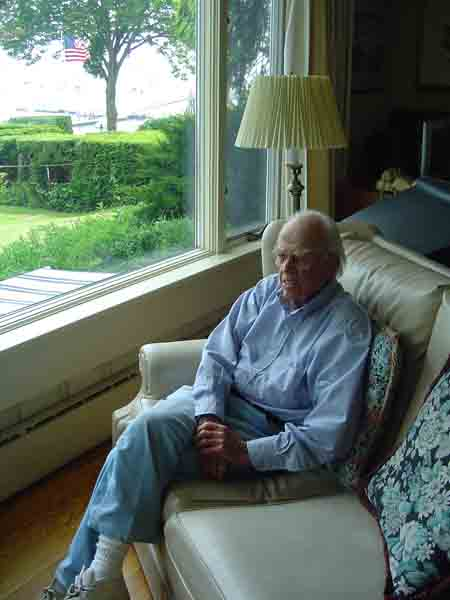
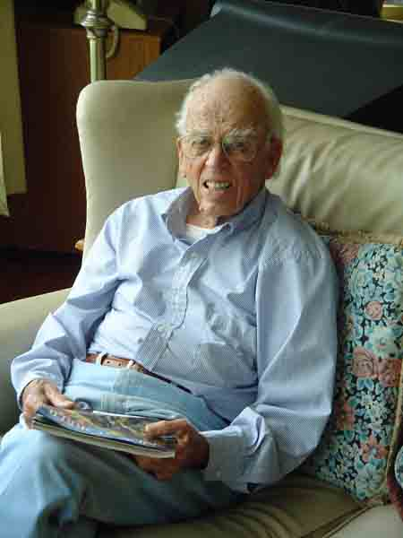
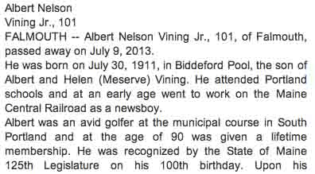
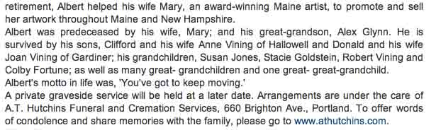
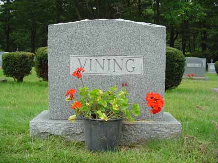
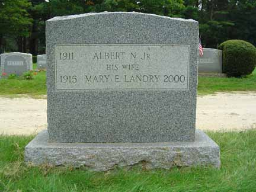

Documentation for Albert Nelson Vining Jr. and Mary E. Landry
Albert Nelson Vining Jr. at home in Falmouth, Maine, on 19 June 2006:


Obituary for Albert Nelson Vining Jr.:


Headstone of Albert Nelson Vining Jr. and Mary E. Landry, in the Pine Grove Cemetery in Falmouth, Cumberland County, Maine:

